Pour habiller l’espace de coworking Gotham, au Flon à Lausanne, j’ai écrit et dessiné une bande dessinée
à l’échelle du bâtiment : douze cases qui grimpent le long de l’escalier jusqu’à la mezzanine. Le scénario ? Une alerte
à Gotham, un duo de justiciers appelé en renfort, et l’ennemi juré de tout open space : l’imprimante.
12 casesScénario & dessinVectoriel, imprimé grand formatCrayon · Illustrator · 3D
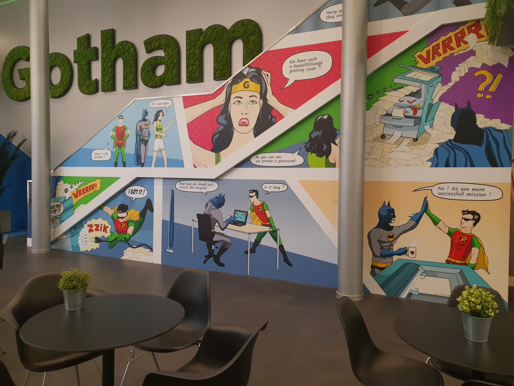
01
Un appel de Gotham
L’histoire commence comme il se doit : un appel, une moto, une grande devise. Et une hôte qui attend les héros de pied ferme.
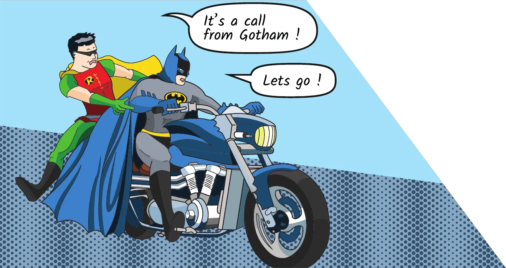
Case 1 · « It’s a call from Gotham ! »
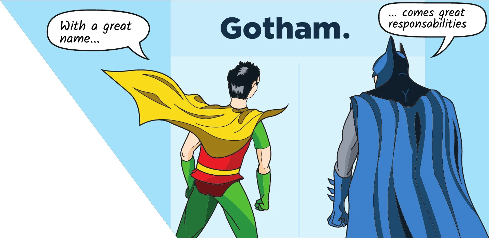
Case 2 · « With a great name… »
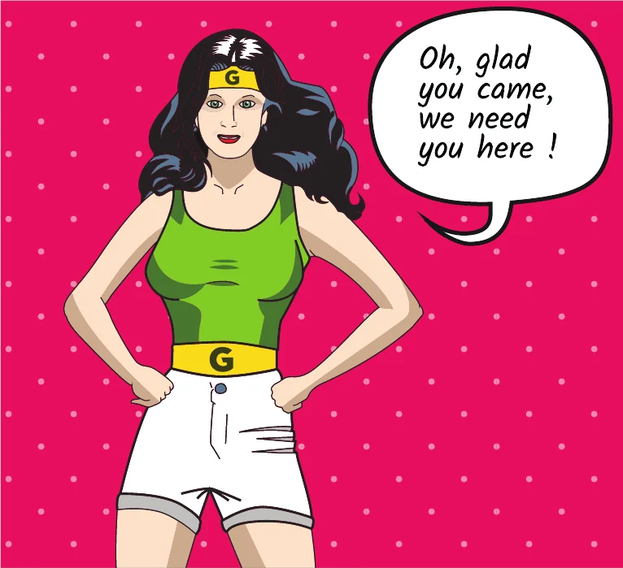
Case 3 · « Oh, glad you came ! »
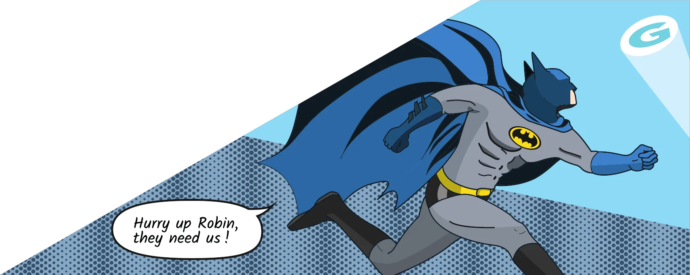
Case 4 · « Hurry up Robin ! »
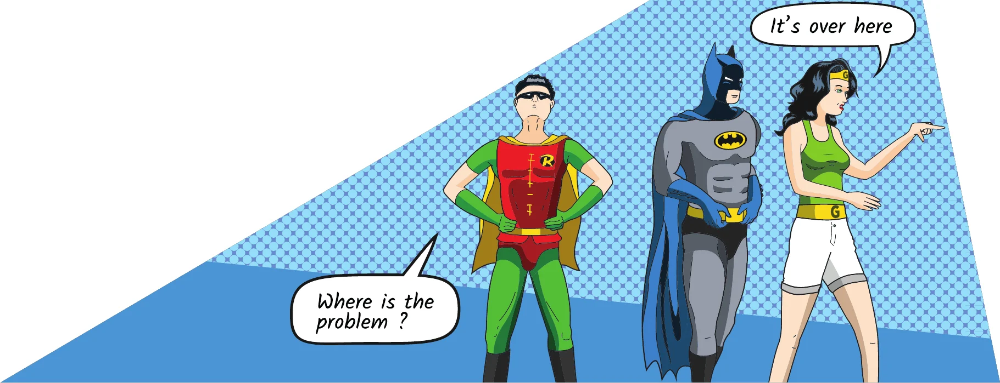
Case 5 · « Where is the problem ? »
02
L’imprimante possédée
Le cœur de l’histoire, et la blague que tout coworker comprend. Les cases en grand, dans l’ordre — de l’alerte au bourrage final.
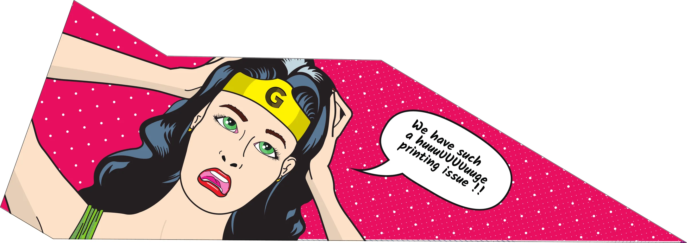
Case 6 · « We have such a huuuUUUUuuge printing issue !! »
Sur le palier, le monstre crache du papier par rafales. VRRRRRR.
Case 7 · « As you can see, our printer is possessed »
Batman se jette sur la machine à mains nues. Elle mord.
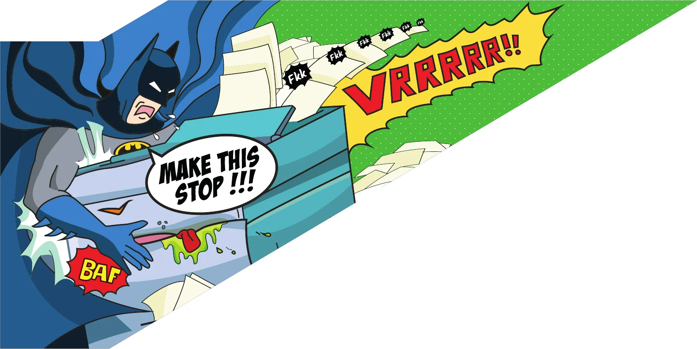
Case 8 · « Make this stop !!! » — BAF.
Robin a une meilleure idée : la prise.
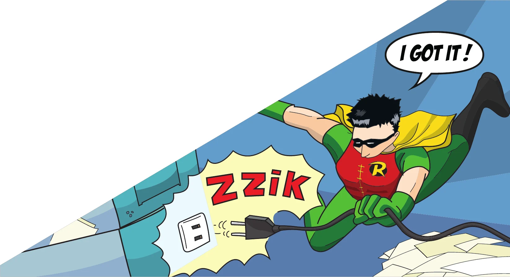
Case 9 · « I got it ! » — ZZIK.
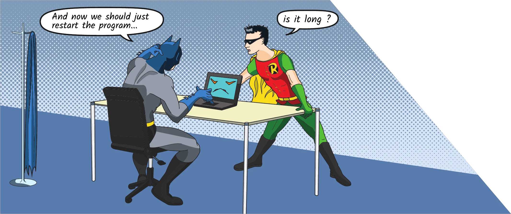
Case 10 · « Is it long ? »
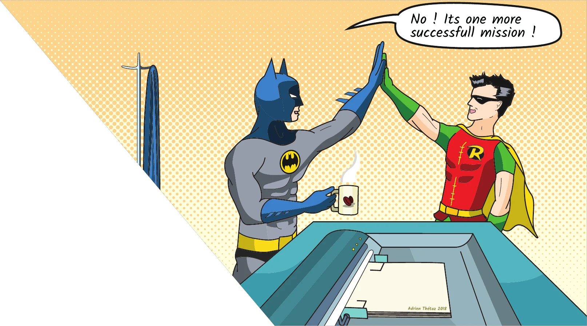
Case 11 · « One more successfull mission ! »
Épilogue
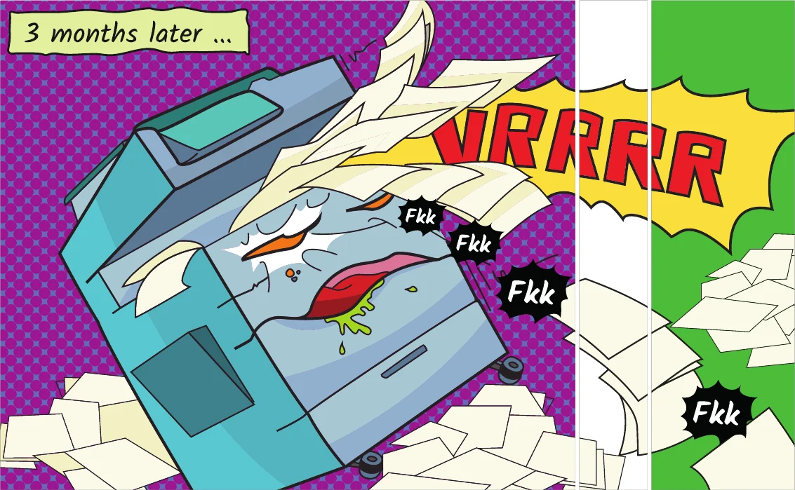
Case 12 · « 3 months later… » — et ça recommence.
03
Du crayon au vecteur
Chaque case est d’abord crayonnée sur papier, puis redessinée en vectoriel dans Illustrator : des aplats, des trames
de points façon comics, un trait net qui tient à plusieurs mètres de haut.
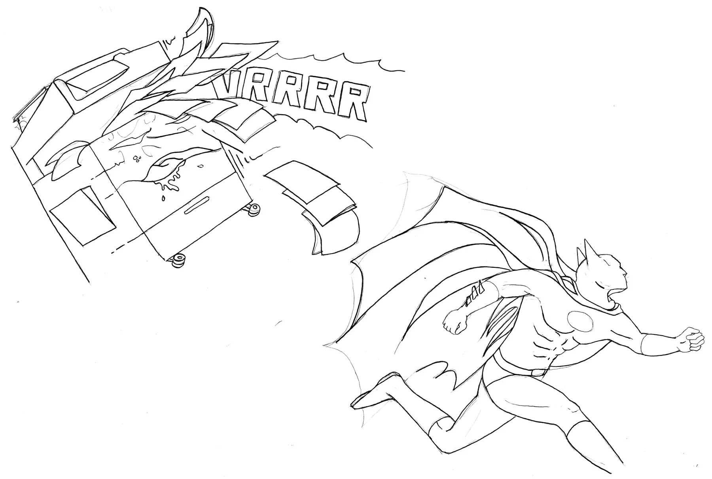
Crayon · Batman contre l’imprimanteVectoriel · case 8
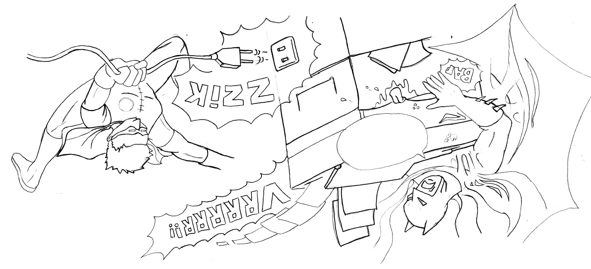
Crayon · Robin débrancheVectoriel · case 9
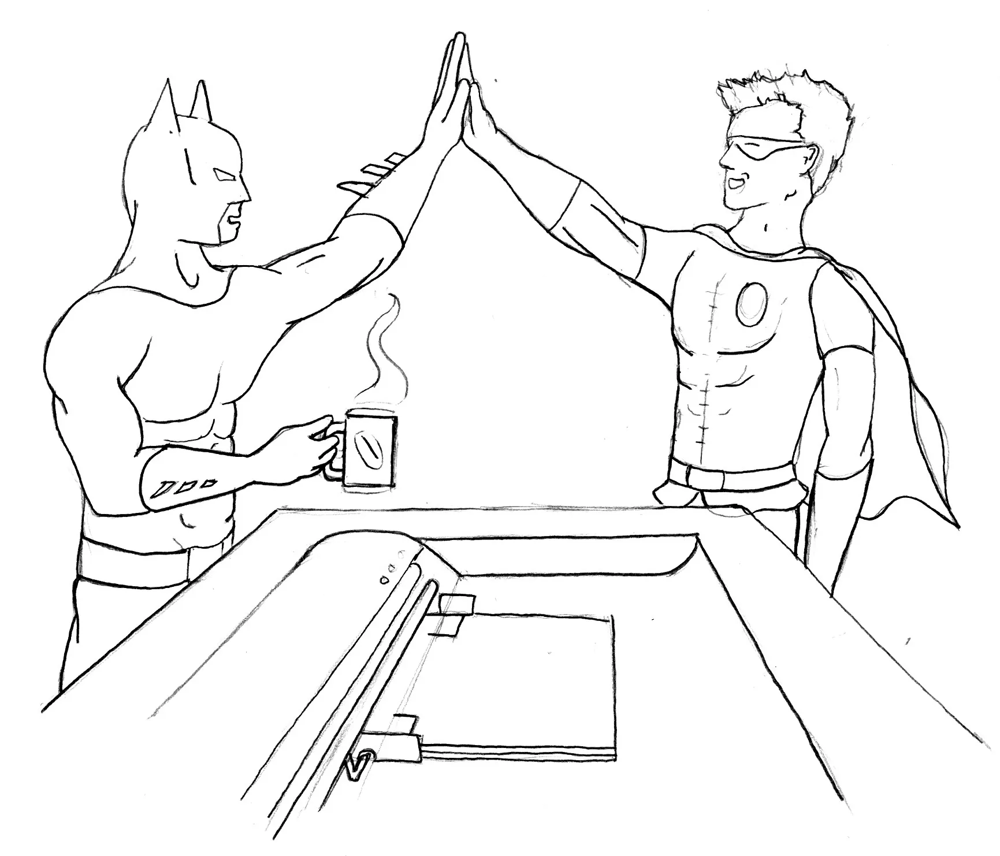
Crayon · mission accomplieVectoriel · case 11
04
En 3D, puis sur le mur
Avant l’impression, la BD a été posée sur une maquette 3D de l’espace pour régler l’échelle et les diagonales
de l’escalier. Puis elle a pris sa place, jusque sur les portes.
Visite 3D · la BD simulée dans l’espace avant impression
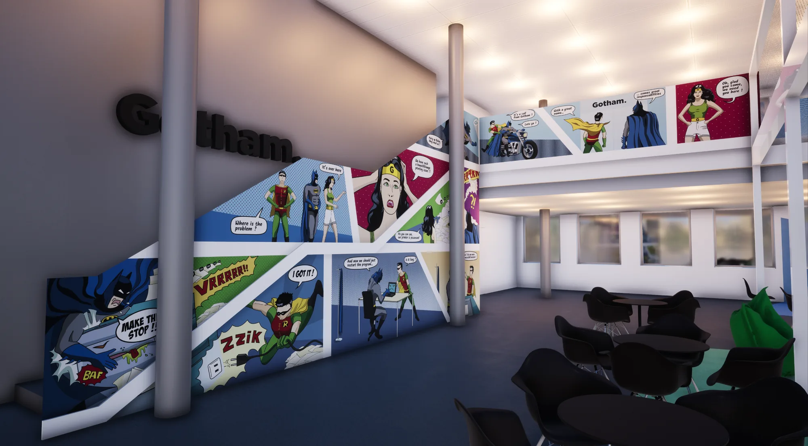
Rendu 3D · vue d’ensemble
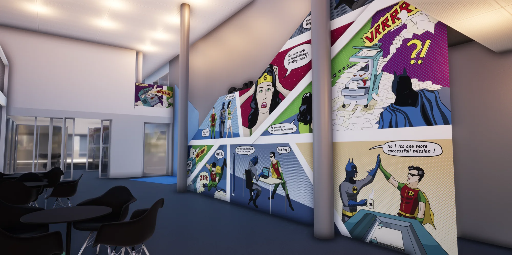
Rendu 3D · depuis le café
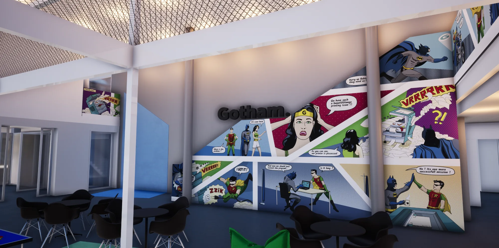
Rendu 3D · sous la verrière
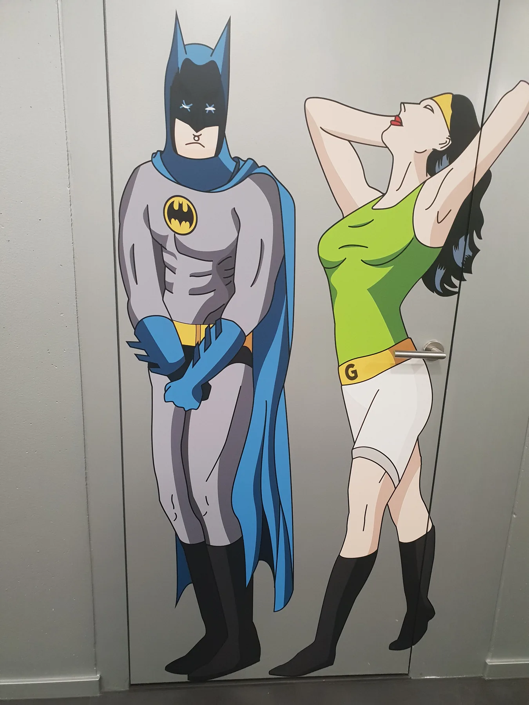
Jusque sur les portes
Et pour ceux qui attendent devant la porte : le duo en taille réelle.
Gotham Lausanne-Flon
Une BD pour un coworking. Et une mission de plus réussie.
Gotham Lausanne-Flon, rue du Port-Franc 22, à deux minutes du métro Flon : coworking, salles de réunion et une
imprimante qui n’a qu’à bien se tenir.